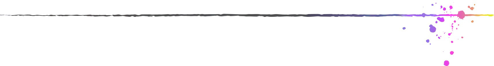

Programming Examples

Modular Accelerometer Control (2017) - C#, Unity
 Started as a refactoring of an earlier Accelerometer Control project, and wanting to practise a more modular design, this project aimed to split systems up into more specialized components. A Physics Controller script was built to handle object forces, with customization options for gravity, input and rotation, along with "arcade" styled physics that apply movement calculations directly to the object transform, bypassing Unity's rigidbody forces system. The project scope then expanded to focus on building specific, focused behaviour scripts, and allowing them to be attached to an object that contains the corresponding controller type. These scripts automatically reference the controller and apply the desired behaviour, such as setting orientation, gravity direction, or performing ground detection using raycasts. This means that gameplay can be built for each object using these prebuilt behaviour scripts coupled with their respective controller, all through the Unity editor GUI.
Started as a refactoring of an earlier Accelerometer Control project, and wanting to practise a more modular design, this project aimed to split systems up into more specialized components. A Physics Controller script was built to handle object forces, with customization options for gravity, input and rotation, along with "arcade" styled physics that apply movement calculations directly to the object transform, bypassing Unity's rigidbody forces system. The project scope then expanded to focus on building specific, focused behaviour scripts, and allowing them to be attached to an object that contains the corresponding controller type. These scripts automatically reference the controller and apply the desired behaviour, such as setting orientation, gravity direction, or performing ground detection using raycasts. This means that gameplay can be built for each object using these prebuilt behaviour scripts coupled with their respective controller, all through the Unity editor GUI.
3D Physics Platformer (2017) - C#, Unity
Starting in 2016 and continuing into 2017, I started work on a 3D platformer in Unity based on the physics driven gameplay found in the Sonic the Hedgehog series of games, which is something I've always wanted to make, and was a driving factor in learning Unity. Gaining the required skills in vector math, trigonometry, and quaternions was the largest hurdle in this project, as these were things I had very limited knowledge of going in, and demanded a lot of learning. Contains GameController, PlayerController, and CameraController scripts to handle main behaviour, with auxiliary scripts like MeshController and InputManager to handle additional behaviour. This was the start of understanding the downsides of large scripts with self-contained systems, and the benefit of dedicated individual scripts with specific purposes that work together to form the larger system. More info on this project can be found on GitHub.
Accelerometer Control (2017) - C#, Unity
Android project utilizing the accelerometer as input to manipulate the scene. Controller scripts for the Game, Camera and Gravity manage their respective tasks. The Game Controller handles player orientation and applying forces such as gravity and wall friction (detected using Unity's collision events). Using the Input Manager through Unity's scripting API, the accelerometer can be read as X and Y inputs. This was then combined into a Vector3. Feeding this vector into Gravity and Camera controllers, which contain behaviour utilizing it, allows for customizable tools that control the gravity direction and camera orientation based on phone rotation. A seperate mode for regular input is included, allowing a device with no accelerometer to control the scene.
Multiplayer Scaling System (2016) - C#, Unity
 One of the earliest examples of code I've written, this project was created after following Unity learning materials to create an arcade-style space shooter. Wanting to take the project much further than the materials covered, I added multiple systems to handle functionality such as; health management, adjustable weapon attributes, drop-in/drop-out multiplayer, difficulty/reward scaling (based on player amount), 'even rewards' system that equally distributes between players, and an object pooling system. More detail on these functionalities can be found on GitHub.
One of the earliest examples of code I've written, this project was created after following Unity learning materials to create an arcade-style space shooter. Wanting to take the project much further than the materials covered, I added multiple systems to handle functionality such as; health management, adjustable weapon attributes, drop-in/drop-out multiplayer, difficulty/reward scaling (based on player amount), 'even rewards' system that equally distributes between players, and an object pooling system. More detail on these functionalities can be found on GitHub.